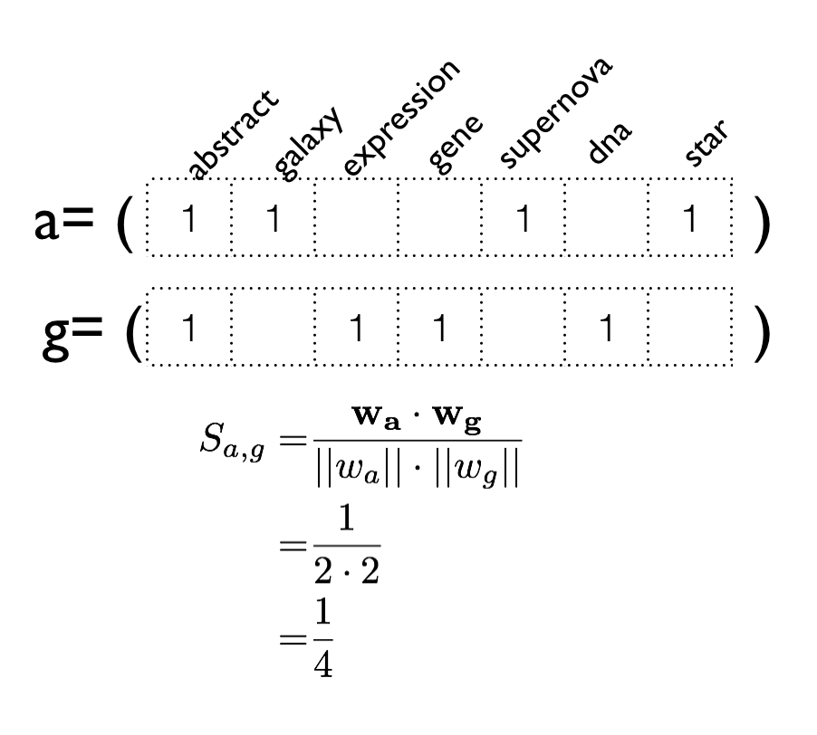
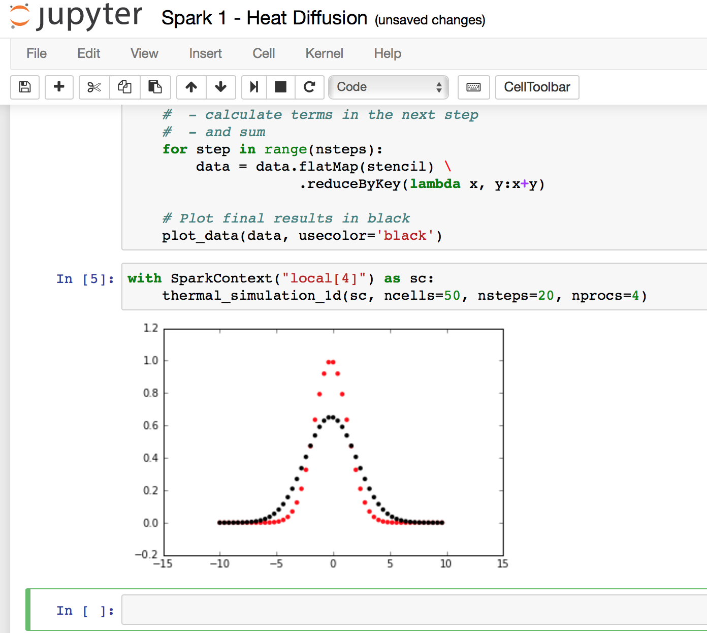
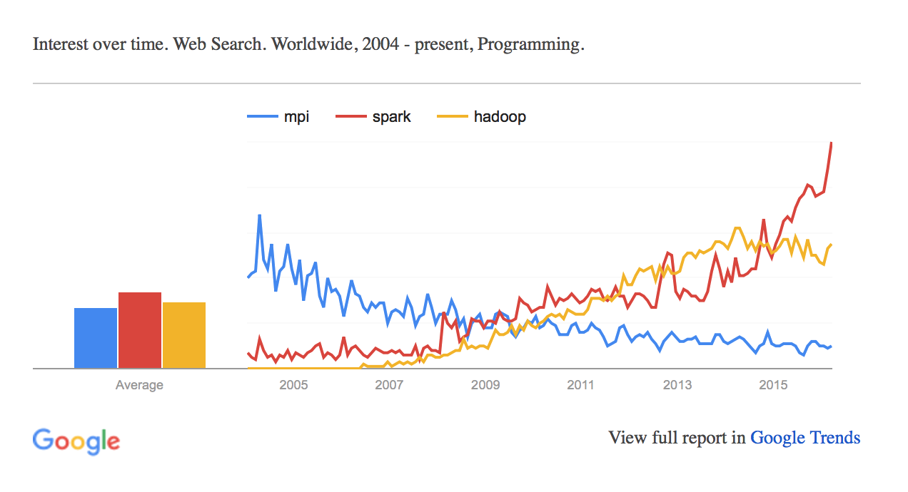
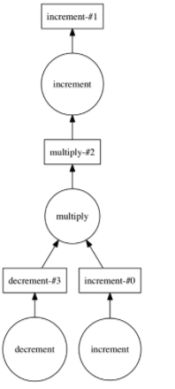
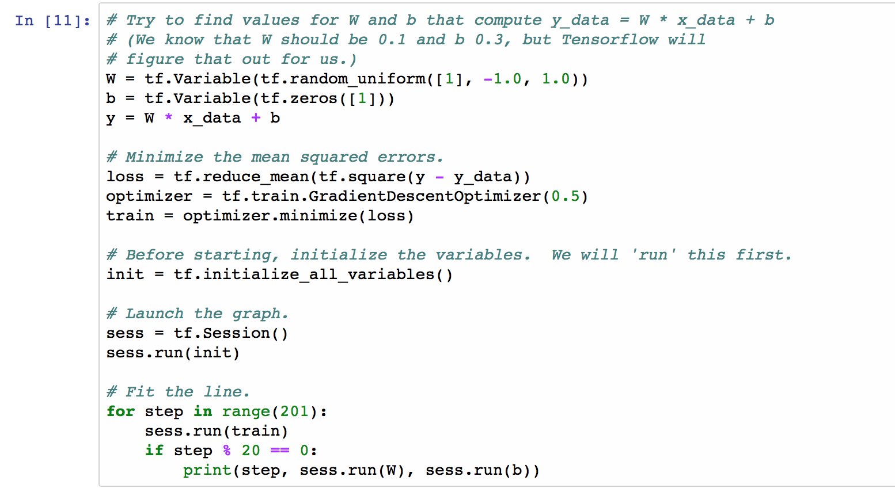

name: title layout: true class: center, middle, title count: false --- ## Chapel’s Home in the New Landscape of Scientific Frameworks ### (and what it can learn from the neighbours) Jonathan Dursi<br/> Senior Research Associate<br/> Centre for Computational Medicine<br/> The Hospital for Sick Children<br/> https://github.com/ljdursi/CHIUW2017 --- name: my-background-1 layout: false .left-column[ ## Who Am I? ### Old HPC Hand... ] .right-column[ Ex-astrophysicist turned large-scale computing. - Large-scale high-speed adaptive reactive fluid fluids - DOE ASCI Center at Chicago - ASCI Red - ASCI Blue - ASCI White - FORTRAN, MPI, Oct-tree regular adaptive mesh ] ??? Before we start, let me tell you a little about where I'm coming from. This story is probably pretty familiar to many of you - I started off doing science with computing, and ended up drifting to the other side of that divide, doing computing to support science. I was doing pretty pretty standard HPC stuff - high speed reactive flows (explicit methods), adaptive grid, FORTRAN with some C and python, that sort of thing. -- .right-column-cont[ - Joined HPC centre after postdoc - Worked with researchers on wide variety of problems - Got interested in genomics: - Large computing needs - Very interesting algorithmic challenges ] ??? After doing a postdoc in Toronto, I moved into the HPC Centre there, working with them and Compute Canada - a little like PRACE or XSEDE - and working with a lot of different researchers doing a lot of different problems. Before too long, I started becoming interested in genomics - partly because it was the new frontier, with fascinating and deep algorithmic challenges, but also required very large-scale computing to accomplish its promise. --- name: my-background-2 layout: false .left-column[ ## Who Am I? ### Old HPC Hand... ### Gone Into Genomics ] .right-column[ Started looking into Genomics in ~2013, made move in 2014 - Ontario Institute for Cancer Research - Working with Jared Simpson, author of ABySS (amongst other things) - First open-source human-scale de novo genome assembler - MPI-based ] ??? I began working in genomics with Jared Simpson, who amongst other accomplishments was the author of ABySS, one of the very early large-scale de novo genome assemblers from what we now call short reads. It tackled large --- including human --- genomes by using distributed memory, using MPI. So it sounds like I found a pretty good niche in Genomics for an HPCer, right? -- .right-column-cont[ - ABySS 2.0 just came out, with a new non-MPI mode ] ??? Not quite. ABySS 2.0 just came out, with a new non-MPI mode which will almost certainly become the default after the kinks are worked out. There are absolutely no plans by any of the development team to develop new MPI-based algorithms or tools --- name: my-background-2 layout: false .left-column[ ## Who Am I? ### Old HPC Hand... ### Gone Into Genomics ] .right-column[ In the meantime, one of the de-facto standards for genome analysis, GATK, has just announced that version 4 will support distributed cluster computing — using Apache Spark. .center[<img src="assets/img/gatk-spark-news.png" width=75%></img>] ] ??? In the meantime, one of the de-facto standards for genome analysis, GATK, has just announced that version 4 will support distributed cluster computing — using Apache Spark. --- ## Exciting Time to be Doing Large-Scale Scientific Computing Large scale scientific computing, 1995-2005 (ish): * ~20 years of stability * Bunch of x86, MPI, ethernet or infiniband * No one outside of academia was much doing big number/data crunching --- ## New Communities Make things Exciting! <img src="assets/img/new-communities.png" style="float: right;" width=50%> * Internet-scale companies (Yahoo!, Google) * Very large-scale image processing * Machine learning: * Sparse linear algebra * k-d trees * Calculations on unstructured meshes (graphs) * Numerical optimization * Building new frameworks --- ## New Hardware Makes things Exciting! * Now: * Large numbers of cores per socket * GPUs/Phis * Next few years: * FPGA (Intel: Broadwell + Arria 10, shipping 2017) * Non-volatile Memory (external memory/out-of-core algorithms) --- ## Richer Scientific Problems Make things Exciting! * New science demands: cutting edge models are more complex. An Astro example: * 80s - gravity only N-body, galaxy-scale * 90s - N-body, cosmological * 00s - Hydrodynamics, cosmological * 10s - Hydrodynamics + rad transport + cosmological --- ## But All Of This Added Complexity is Challenging * Just keeping up with what's available is hard * More and more computing power and frameworks becoming available, but amount of time in a day isn't * What's a scientist to do? .center[<img src="assets/img/gradstudents-per-cpu.png" width=75%></img>] --- layout: false .left-column[ ## Outline ] .right-column[ - A survey of the evolving landscape of Big Computing frameworks - A tour of some common big-data computing problems - Genomics and otherwise - Not so different from complex simulations - A tour of programming models to tackle them, and lessons we can learn - R - Spark - Dask - Distributed TensorFlow - MPI - Coarray Fortran - Julia - Rust, Swift - Genomics tools - Where Chapel is, and what nearby territories look fertile ] ??? It's very difficult to describe what place Chapel does and can occupy in the landscape without drawing a map, so what I want to do for the beginning of our time together is to walk through these new territories with you. I want to talk about some common big data analysis tasks and point out how similar they are to familiar simulation tasks. Then I'd like to show some of the programming models that are springing up are tackling these problems. Once we've sketched out the map, I want to describe the place I see Chapel as occupying now — and the attractive neighbouring vacant territories that we can occupy if we want. --- layout: false class: center, middle, inverse ## The Lay Of The Land: 2002, 2007, and 2017 --- ## Ye Olde Entire Scientific Computing Worlde, c. 2002 .center[<img src="assets/img/ScientificComputing2002.png" width=75%></img>] (map from http://mewo2.com/notes/terrain/) --- ## Ye Olde Entire Scientific Computing Worlde, c. 2002 <img src="assets/img/ScientificComputing2002.png" width=33% style="float: right;"></img> It was a simpler time: * Statistial Computing largely the domain of the social sciences, some experimental sciences - R was beginning to be quite popular * Physical scientists working with Big Iron or workstations, performing simulation or analysis of comparitively regular data sets - FORTRAN/C/C++(?) + MPI + OpenMP - FORTRAN/C/C++(?) - MATLAB, IDL - Python (Numeric) * Not a lot of SQL/database work in traditional technical computing, but communications up and downstream w/ statistical computing * Maybe infrequent ferry service between statistical computing and MATLAB communities --- ## And Then They Came, c. 2007 .center[</img>] --- ## And Then They Came, c. 2007 .center[</img>] Widespread adption of computing and networking brought *data*, and lot of it. * "Internet-scale" companies were the first businesses to try taking advantage of all their data, but others soon followed - Hadoop, HDFS spawned an entire ecosystem * In the sciences, genomics was in the right place at right time - Success of Human Genome Project in 2003 - High-throughput sequencing technologies becoming available - Lots and lots of data - but how to process it? --- ## The Present Day, 2017 .center[</img>] --- ## The Present Day, 2017 </img> * The newcomers started with some of their own tools (Hadoop, HDFS) * (Some of) the data-analysis handling communities jumped at the chance to start working with the data-intensive newcomers - Similar needs, interests - Python on the general computing and physical sciences side - R on the statistics/Machine Learning (ne√© data mining) side * The simulation science communities, which makes up most of traditional HPC, were more skeptical - Needs seemed very different - Very different terminology - Initial tools (Hadoop Map-Reduce) were all out of core, calculations very simple (analytics) - Still not a lot of overlap --- ## The Present Day, 2017 </img> Will argue that they are not so different, and there's a lot to learn (on both sides) across the data science/simulation science divide * Simulations are getting more complex, dynamic * Big data problems have long been in-memory, increasingly compute intensive * Moving towards each other in fits and starts I tend to place Chapel as a redoubt on the outskirts of traditional HPC terrain, trying to lead the community towards where the action is: - Productive tooling - Modern language affordances - Making it easier to tackle scale, more complex problems --- layout: false class: center, middle, inverse ## The Problems Big Data Frameworks Aim To Solve --- .left-column[ ## Big Data Problems ] .right-column[ Big Data problems same as HPC, if in different context - Large scale network problems - Graph operations - Similarity computations, clustering, optimization, - Linear algebra - Tree methods - Time series - FFTs, smoothing, ... Main difference: hit highly irregular, unstructured, dyanamic problems earlier in data analysis than simulation (but Exascale...) - Irregular data lookups: - Key-Value Stores ] ??? Ultimately Big Data problems are more or less the same problems we face in HPC although in a different context. The Big Data crowd hit problems of dealing with wildly irregular, unstructured, dynamic data structures first - irregularity to a degree that we've up til now been able to avoid in simulation... but may not be able to on the road to Exascale. --- .left-column[ ## Big Data Problems ### Key-value stores ] .right-column[ In simulation, you normally have the luxury of knowing exactly where needed data is, because you put it there. Maintained with global state, distributed state, or implicitly (structured mesh). .center[<img src="assets/img/gc-filling.png" width=75%></img>] ] --- .left-column[ ## Big Data Problems ### Key-value stores ] .right-column[ With faults, or rapid dynamism, or too-large scale to keep all state nearby, less true. Data analysis: much of genomics involves lookups in indices too large for one node's memory - Good/simple/robust distributed hash tables within an application would be extremely valuable. Begins to look a lot like distributed key-value stores in big data. Highly irregular access (don't know where you're sending to, receiving from, when requests are coming, or how many messages you will receive/send) has not been the strong suit of MPI-based HPC stacks. .center[<img src="assets/img/dht.png" width=95% style="margin-top:-1em"></img>] ] ??? The users and developers of in-memory NoSQL databases view performance as crucial, and so teams are enormously concerned with latency - especially since a query (and especially an update) may involve several messages between participating nodes. The discussions surrounding latency, bandwidth, cache utilisation, threading, etc would all be extremely familiar to those who work on HPC software. --- .left-column[ ## Big Data Problems ### Key-value stores ### Linear algebra ] .right-column[ Almost any sort of numeric computation requires linear algebra. In many big-data applications, the linear algebra is _extremely_ sparse and unstructured; say doing similarity calculations of documents, using a bag-of-words model. If looking at ngrams, cardinality can be enormous, no real pattern to sparsity .center[</img>] ] ??? Almost any sort of numeric computation requires linear algebra. That's just mathematics, and is inescapable. In many big-data applications, the linear algebra is _extremely_ sparse and unstructured; say doing similarity calculations of documents, using a bag-of-words model, where order is ignored and documents are described as simply occurrance counts words --- very sparse integer vectors. Words are one thing, but If looking at ngrams, cardinality can be enormous, no real pattern to sparsity --- .left-column[ ## Big Data Problems ### Key-value stores ### Linear algebra ### Graph problems ] .right-column[ As with other problems - big data graphs are like HPC graphs, but more so. Very sparse, very irregular: nodes can have enormously varying degrees, _e.g._ social graphs .center[</img>] https://en.wikipedia.org/wiki/Social_graph ] ??? As with other problems - big data graphs are like HPC graphs, but more so. For graphs in physical science simulation - say unstructured grids - or analysis, nodes typically have say within a factor of two or order of magnitude the same number of neighbours. Not so with (say) social media graphs: Very sparse, very irregular: nodes can have enormously varying degrees Inexplicably, Justin Bieber has far more twice as many followers as I do on twitter --- .left-column[ ## Big Data Problems ### Key-value stores ### Linear algebra ### Graph problems ] .right-column[ Generally decomposed in similar ways. Processing looks very much like neighbour exchange on an unstructured mesh; can map unstructured mesh computations onto (very regular) graph problems. .center[<img src="assets/img/flink-sssp.png" width=75%></img>] https://flink.apache.org/news/2015/08/24/introducing-flink-gelly.html ] --- .left-column[ ## Big Data Problems ### Key-value stores ### Linear algebra ### Graph problems ] .right-column[ Calculations on (_e.g._) social graphs are typically very low-compute intensity: - Sum - Min/Max/Mean So that big-data graph computations are often _more_ latency sensitive than more compute-intensive technical computations ⇒ lots of work done and in progresss to reduce communication/framework overhead .center[<img src="assets/img/graphx-tables_and_graphs.png" width=75%></img>] https://spark.apache.org/docs/1.2.1/graphx-programming-guide.html ] --- .left-column[ ## Big Data Problems ### Key-value stores ### Linear algebra ### Graph problems ### Commonalities ] .right-column[ The problems big-data practitioners face are either: - The same as in HPC - The same as HPCish large-scale scientific data analysis - Or what data analysis/HPC will be facing towards exascale - Less regular/structured - More dynamic So it's worth examining the variety of tools that community has built, - To see if they can benefit our community - To see what makes them tick - To see if we can improve them ] --- layout: false class: center, middle, inverse ## R: https://www.r-project.org --- .left-column[ ## R ### Overview ] .right-column[ <img src="assets/img/Rlogo.png" width=10% style="float: left;"></img> The R foundation considers R “an environment within which statistical techniques are implemented.” * A programming language built around statistical analysis and (primarily) interactive use. * Enormous contributed package library [CRAN](https://mirrors.nics.utk.edu/cran/) (10,700+ packages). * Lingua Franca of desktop statistical analysis. * Lovely newish development/interactive use environment, [RStudio](https://www.rstudio.com). .center[</img>] ] --- .left-column[ ## R ### Overview ### Initial History ] .right-column[ R's popularity was _not_ a given. * Many extremely established incumbant stats packages, commercial (SPSS, SAS) * Referees can always say "I don't trust this new program, what does good old SPSS/SAS say? (Fear may be more important than actual fact). * Free, easily extensible, high-quality --- took ages to catch on, but it did. .center[ <table width=45%> <tbody> <tr><td></img></td></tr> <tr><td>Figure from <a href="http://r4stats.com/articles/popularity/">http://r4stats.com/articles/popularity/</a></td></tr> </tbody> ] .center[**Lesson 1: Incumbents _can_ be beaten**.] ] --- .left-column[ ## R ### Overview ### Initial History ] .right-column[ R's popularity was _not_ a given. * Many extremely established incumbant stats packages, commercial (SPSS, SAS) * Referees can always say "I don't trust this new program, what does good old SPSS/SAS say? (Fear may be more important than actual fact). * Free, easily extensible, high-quality --- took ages to catch on, but it did. .center[ <table width=45%> <tbody> <tr><td></img></td></tr> <tr><td>Figure from <a href="http://r4stats.com/articles/popularity/">http://r4stats.com/articles/popularity/</a></td></tr> </tbody> ] .center[**Lesson 2: Growth is slow, until it isn't**.] ] --- .left-column[ ## R ### Overview ### Initial History ] .right-column[ A big reason for deciding to use R are the packages that are available * High-quality, user-contributed packages to solve specific types of problems * Written to solve authors' problem, helpful to others .center[**Lesson 3: Users' contributions can be as important for adoption as implementers'**.] .center[ <table width=45%> <tbody> <tr><td></img></td></tr> <tr><td>Figure from <a href="http://blog.revolutionanalytics.com/2016/04/cran-package-growth.html">http://blog.revolutionanalytics.com/2016/04/cran-package-growth.html</a></td></tr> </tbody> ] ] --- .left-column[ ## R ### Overview ### Initial History ### Dataframes ] .right-column[ The fundamental data structure of R has been(*) the `dataframe`. * Think spreadsheet * List of typed columns (1d vectors) * Can be thought of as 1d array of `record`. .center[ </img> ] ] --- .left-column[ ## R ### Overview ### Initial History ### Dataframes ] .right-column[ The fundamental data structure of R has been(*) the `dataframe`. * Think spreadsheet * List of typed columns (1d vectors) * Can be easily thought of as 1d array of `record`. * Easily distributed over multiple machines! .center[ </img> ] ] --- .left-column[ ## R ### Overview ### Initial History ### Dataframes ### HPC R ] .right-column[ The fundamental data structure of R has been the `dataframe`. * Easily distributed over multiple machines! One might reasonably expect that there thus would be a thriving ecosystem of parallel/big data tools for R. There's _some_ truth to that (_e.g._ [CRAN HPC Task view](https://cran.r-project.org/web/views/HighPerformanceComputing.html)): .center[ </img> ] ] --- .left-column[ ## R ### Overview ### Initial History ### Dataframes ### HPC R ] .right-column[ But a large number of packages isn't necessarily a sign of vibrancy * Can be wheel reinvention factory R has several (solid, well made) parallel packages: snow, multicore (now both in core), foreach. * But they don't work together * And don't implement any higher-order algorithms. Also has several excellent packages that make use of parallelism: * Caret (various data mining algorithms) * BiocParallel (for BioConductor packages) But these represent a _lot_ of work by people; hard to get from one side to the other. .center[</img>] ] --- .left-column[ ## R ### Overview ### Initial History ### Dataframes ### HPC R ] .right-column[ If your parallelism isn't very easily expressed, and a higher-level package for solving your problems doesn't already exist, you have to parallelize your algorithms from very basic pieces * But scientists don't want to write parallel code * They just want to solve their problems! .center[**Lesson 4: Decompositions aren't enough -- need rich, composable, parallel tools**.] .center[</img>] ] --- .left-column[ ## R ### Overview ### Initial History ### Dataframes ### HPC R ### Datatables ] .right-column[ (*) R was usually written in a functional programming style - Return results, don't mutate arguments Dataframes reflect that: - nontrivial changes require copying and returning the copy - Slow, memory pressure. Data.table, is fully mutable - analysis routines typically see significant speedup, reduced memory .center[**Lesson 5: Mutability is essential for technical computing performance**.] ] --- layout: false class: center, middle, inverse ## Spark: http://spark.apache.com --- .left-column[ ## Spark ### Overview ] .right-column[ Hadoop came out in ~2006 with MapReduce as a computational engine, which wasn't that useful for scientific computation. * One pass through data * Going back to disk every iteration However, the ecosystem flourished, particularly around the Hadoop file system (HDFS) and new databases and processing packages that grew up around it. .center[</img>] ] --- .left-column[ ## Spark ### Overview ] .right-column[ Spark (2012) is in some ways "post-Hadoop"; it can happily interact with the Hadoop stack but doesn't require it. Built around concept of in-memory resilient distributed datasets * Tables of rows, distributed across the job, normally in-memory * Immutable * Restricted to certain transformations Used for database, machine learning (linear algebra, graph, tree methods), _etc._ .center[<img src="assets/img/spark-rdd.png" width=50%></img>] ] --- .left-column[ ## Spark ### Overview ### Performance ] .right-column[ <img src="assets/img/logistic-regression.png" width=33% style="float: right;"></img> Being in-memory was a huge performance win over Hadoop MapReduce for multiple passes through data. Spark immediately began supplanting MapReduce for complex calculations. .center[**Lesson 6: Performance is crucial!**] ] -- .right-column-cont[ .center[**...To a point**.] In 2012, either would have been much faster in MPI or a number of HPC frameworks. * No multicore * Generic sockets for communications * No GPUs * JVM: Garbage collection jitter, pausses But development time, lack of fault tolerance, no integration into ecosystem (HDFS, HBase..) mean that not even considered. Don't have to be faster than _everything_. ] --- .left-column[ ## Spark ### Overview ### Performance ] .right-column[ Project Titanium (2015) was an extensive rewriting of core Spark for performance. * Get rid of JVM memory management, handle it themselves (FORTRAN77 workspace arrays!) * Vastly improved cache performance * Code generation (more later) In 2016, built-in GPU support. .center[**Lesson 8: There will _always_ be pending performance improvements. They're important, but not show-stoppers**.] ] -- .right-column-cont[ .center[**Lesson 9: Big Data frameworks are learning HPC lessons faster than HPC stacks are learning Big Data lessons**.] ] --- .left-column[ ## Spark ### Overview ### Performance ### RDDs ] .right-column[ Operations on Spark RDDs can be: * Transformations, like map, filter, reduce, join, groupBy... * Actions like collect, foreach, .. You build a Spark computation by chaining together transformations; but no data starts moving until part of the computation is materialized with an action. <img src="assets/img/spark-rdd.png" width=75%></img> ] --- layout: false .left-column[ ## Spark ### Overview ### Performance ### RDDs ] .right-column[ Spark RDDs prove to be a very powerful abstraction. Key-Value RDDs are a special case - a pair of values, first is key, second is value associated with. Linda tuple spaces, which underly Gaussian. Can easily use join, _etc._ to bring all values associated with a key together: - Like all stencil terms that are contribute at a particular grid point .center[</img>] ] --- .left-column[ ## Spark ### Overview ### Performance ### RDDs ### Dataframes ] .right-column[ But RDDs are also building blocks. Spark Dataframes are lists of columns, like pandas or R data frames. Can use SQL-like queries to perform calculations. But this allows bringing the entire mature machinery of SQL query optimizers to bear, allowing further automated optimization of data movement, and computation. (Spark Notebook 2) <img src="assets/img/spark-dataframes.png" width=75%></img> ] --- .left-column[ ## Spark ### Overview ### Performance ### RDDs ### Dataframes ### Graphs ] .right-column[ Graph library — [GraphX](http://spark.apache.org/graphx/) — has also been implemented on top of RDDs. Many interesting features, but for us: [Pregel](http://blog.acolyer.org/2015/05/26/pregel-a-system-for-large-scale-graph-processing/)-like algorithms on graphs. Nodes passes messages to their neighbours along edges. <img src="assets/img/graphx.png" width=75%></img> ] --- .left-column[ ## Spark ### Overview ### Performance ### RDDs ### Dataframes ### Graphs ] .right-column[ This makes implementing unstructured mesh methods extremely straightforward (Spark notebook 4): ```scala def step(g:Graph[nodetype, edgetype]) : Graph[nodetype, edgetype] = { val terms = g.aggregateMessages[msgtype]( // Map triplet => { triplet.sendToSrc(src_msg(triplet.attr, triplet.srcAttr, triplet.dstAttr)) triplet.sendToDst(dest_msg(triplet.attr, triplet.srcAttr, triplet.dstAttr)) }, // Reduce (a, b) => (a._1, a._2, a._3 + b._3, a._4 + b._4, a._5 + b._5, a._6 + b._6, a._7 + b._7) ) val new_nodes = terms.mapValues((id, attr) => apply_update(id, attr)) return Graph(new_nodes, graph.edges) } ``` .center[<img src="assets/img/graphx-init.png" width=33%></img> <img src="assets/img/graphx-final.png" width=33%></img>] ] ??? This makes implementing unstructured mesh methods extremely straightforward, and there's a little example with the talk that implements one in 50 lines of code or so. The argument, to be clear, isn't that this is researchers should be doing unstructured mesh codes; the argument is that the problems these tools are solving for their users aren't some completely alien and irrelevant forms of analyses. --- .left-column[ ## Spark ### Overview ### Performance ### RDDs ### Dataframes ### Graphs ] .right-column[ All of these features - key-value RDDs, Dataframes, (now Datasets), and graphs, are built upon the basic RDD plus the fundamental transformations. .center[**Lesson 4b: The right abstractions — decompositions with enough primitive operations to act on them — can be enough to build an ecosystem on**] ] --- .left-column[ ## Spark ### Overview ### Performance ### RDDs ### Dataframes ### Graphs ### Execution graphs ] .right-column[ Delayed computation + view of entire algorithm allows optimizations over the entire computation graph. So for instance here, nothing starts happening in earnest until the `plot_data()` (Spark notebook 1) ```python # Main loop: For each iteration, # - calculate terms in the next step # - and sum for step in range(nsteps): data = data.flatMap(stencil) \ .reduceByKey(lambda x, y:x+y) # Plot final results in black plot_data(data, usecolor='black') ``` Knowledge of lineage of every shard of data also means recomputation is straightforward in case of node failure ] --- .left-column[ ## Spark ### Overview ### Performance ### RDDs ### Dataframes ### Graphs ### Execution graphs ### Adoption ] .right-column[ Adoption has been rapid and substantial - Biggest open-source big-data platform - Huge private-sector adoption, which has been hard for HPC - Selected in industry because of performance and ease of use .center[<img src="assets/img/spark-business-uptake.png" width=75%></img>] .center[http://insidebigdata.com/2015/11/17/why-is-apache-spark-so-hot/] ] ??? Adoption has been rapid and substantial - Biggest open-source big-data platform - Huge private-sector adoption, which has been hard for HPC - Selected in industry because of performance and ease of use --- .left-column[ ## Spark ### Overview ### Performance ### RDDs ### Dataframes ### Graphs ### Execution graphs ### Adoption ] .right-column[ Adoption has been enormous - Huge interest by programmers .center[</img>] .center[Google Search] .center[<img src="assets/img/stack-overflow-qs.png" width=75%></img>] .center[Questions on Stack Overflow] ] --- .left-column[ ## Spark ### Overview ### Performance ### RDDs ### Dataframes ### Graphs ### Execution graphs ### Adoption ### Pros/Cons ] .right-column[ **Cons** * JVM Based (Scala) means C interoperability always fraught. * Not much support for high-performance interconnects (although that's coming from third parties - [HiBD group at OSU](http://hibd.cse.ohio-state.edu)) * Very little explicit support for multicore yet, which leaves some performance on the ground. * Doesn't scale _down_ very well; very heavyweight **Pros** * Very rapidly growing * Performance improvements version to version * Easy to find people willing to learn ] ??? Looking over Spark, it's easy to see some Pros and Cons (from the point of view of _our_ use cases; Spark has been designed and optimized for its community, and Big Data users would have a different list of Pros/Cons) A big one from our point of view is that the relatively heavyweight infrastructure around individual Spark processes means that it scales *down* fairly poorly. But the point here isn't that I'm proposing that our simulation codes should be rewritten in Spark - that would be silly. The point is that other communities are building high-productivity tools for doing number-crunching for a user community that cares a great deal about performance and scale - not least of which because they pay real money for cycles - and they're not building it on top of MPI. --- class: center, middle, inverse count: false ## Dask: http://dask.pydata.org/ --- .left-column[ ## Dask ### Overview ] .right-column[ Dask is a python parallel computing package * Very new - 2015 * As small as possible * Scales down very nicely * Works very nicely with NumPy, Pandas, Scikit-Learn * Is definitely nibbling into HPC “market share” * For traditional numerical computing on few nodes * For less regular data analysis/machine learning on larger scale * (likely siphoning off a little uptake of Spark, too) Used for very general data analysis (linear algebra, trees, tables, stats, graphs...) and machine learning ] --- .left-column[ ## Dask ### Overview ### Task Graphs ] .right-column[ Allows manual creation of quite general parallel computing data flows (making it a great way to prototype parallel numerical algorithms): ```python from dask import delayed, value @delayed def increment(x, inc=1): return x + inc @delayed def decrement(x, dec=1): return x - dec @delayed def multiply(x, factor): return x*factor w = increment(1) x = decrement(5) y = multiply(w, x) z = increment(y, 3) from dask.dot import dot_graph dot_graph(z.dask) z.compute() ``` </img> ] --- .left-column[ ## Dask ### Overview ### Task Graphs ] .right-column[ Once the graph is constructed, computing means scheduling either across threads, processes, or nodes * Redundant tasks (recomputation) pruned * Intermediate tasks discarded after use * Memory use kept low * If guesses wrong, task dies, scheduler retries * Fault tolerance .center[<img src="assets/img/dask-collections-schedulers.png" width=75%></img>] .center[http://dask.pydata.org/en/latest/index.html] ] --- .left-column[ ## Dask ### Overview ### Task Graphs ### Dask Arrays ] .right-column[ Array support also includes a small but growing number of linear algebra routines Dask allows out-of-core computation on arrays (or dataframes, or bags of objects): will be increasingly important in NVM era * Graph scheduler automatically pulls only chunks necessary for any task into memory * New: intermediate results can be spilled to disk ```python file = h5py.File(hdf_filename,'r') mtx = da.from_array(file['/M'], chunks=(1000, 1000)) u, s, v = da.linalg.svd(mtx) u.compute() ``` ] --- .left-column[ ## Dask ### Overview ### Task Graphs ### Dask Arrays ] .right-column[ Arrays have support for guardcells, which make certain sorts of calculations trivial to parallelize (but lots of copying right now): (From dask notebook) ```python subdomain_init = da.from_array(dens_init, chunks=((npts+1)//2, (npts+1)//2)) def dask_step(subdomain, nguard=2): # `advect` is just operator on a numpy array return subdomain.map_overlap(advect, depth=nguard, boundary='periodic') with ResourceProfiler(0.5) as rprof, Profiler() as prof: subdomain = subdomain_init nsteps = 100 for step in range(0, nsteps//2): subdomain = dask_step(subdomain) subdomain = subdomain.compute(num_workers=2, get=mp_get) ``` <img src="assets/img/dask-advection.png" width=75%></img> ] --- .left-column[ ## Dask ### Overview ### Task Graphs ### Dask Arrays ### Diagnostics ] .right-column[ Comes with several very useful performance profiling tools which will be instantly famiilar to HPC community members </img> ] --- .left-column[ ## Dask ### Overview ### Task Graphs ### Dask Arrays ### Diagnostics ### Pros/Cons ] .right-column[ **Cons** * Performance: Aimed at analysis tasks (big, more loosely coupled) rather than simulation * Scheduler+TCP: 200μs per-task overhead, orders of magnitude larger than an MPI message * Not a replacement in general for large-scale tightly-coupled computing * Python **Pros** * Trivial to install, start using * Outstanding for prototyping parallel algorithms * Out-of-core support baked in * With Numba+Numpy, very reasonable single-core performance * Automatically overlaps communication with computation: 200μs might not be so bad for some methods * Scheduler, communications all in pure python right now, rapidly evolving: * **Much** scope for speedup ] --- class: center, middle, inverse count: false ## TensorFlow: http://tensorflow.org --- .left-column[ ## TensorFlow ### Overview ] .right-column[ TensorFlow is an open-source dataflow for numerical computation with dataflow graphs, where the data is always in the form of “tensors” (n-d arrays). Very new: Released November 2015 From Google, who uses it for machine learning. Lots of BLAS operations and function evaluations but also general numpy-type operations, can use GPUs or CPUs. .center[<img src="assets/img/tensors_flowing.gif" width=40%></img>] ] --- .left-column[ ## TensorFlow ### Overview ### Graphs ] .right-column[ As an example of how a computation is set up, here is a linear regression example. TensorFlow notebook 1 </img> ] --- .left-column[ ## TensorFlow ### Overview ### Graphs ] .right-column[ Linear regression is already built in, and doesn't need to be iterative, but this example is quite general and shows how it works. Variables are explicitly introduced to the TensorFlow runtime, and a series of transformations on the variables are defined. When the entire flowgraph is set up, the system can be run. The integration of tensorflow tensors and numpy arrays is very nice. <img src="assets/img/tf_regression_fit.png" width=80%></img> ] --- .left-column[ ## TensorFlow ### Overview ### Graphs ### Mandelbrot ] .right-column[ All sorts of computations on regular arrays can be performed. Some computations can be split across GPUs, or (eventually) even nodes. All are multi-threaded. .center[<img src="assets/img/tf_mandelbrot.png" width=75%>] ] --- .left-column[ ## TensorFlow ### Overview ### Graphs ### Mandelbrot ### Wave Eqn ] .right-column[ All sorts of computations on regular arrays can be performed. Some computations can be split across GPUs, or (eventually) even nodes. All are multi-threaded. .center[] ] --- .left-column[ ## TensorFlow ### Overview ### Graphs ### Mandelbrot ### Wave Eqn ### Distributed ] .right-column[ As with laying out the computations, distributing the computations is still quite manual: ```python with tf.device("/job:ps/task:0"): weights_1 = tf.Variable(...) biases_1 = tf.Variable(...) with tf.device("/job:ps/task:1"): weights_2 = tf.Variable(...) biases_2 = tf.Variable(...) with tf.device("/job:worker/task:7"): input, labels = ... layer_1 = tf.nn.relu(tf.matmul(input, weights_1) + biases_1) logits = tf.nn.relu(tf.matmul(layer_1, weights_2) + biases_2) # ... train_op = ... with tf.Session("grpc://worker7.example.com:2222") as sess: for _ in range(10000): sess.run(train_op) ``` Communications is done using [gRPC](http://www.grpc.io), a high-performance RPC library based on what Google uses internally. ] --- .left-column[ ## TensorFlow ### Overview ### Graphs ### Mandelbrot ### Wave Eqn ### Distributed ### Adoption ] .right-column[ Very rapid adoption, even though targetted very narrowly: deep learning All threaded number crunching on arrays and communication of results of those array calculations .center[] ] --- .left-column[ ## TensorFlow ### Overview ### Graphs ### Mandelbrot ### Wave Eqn ### Distributed ### Adoption ### Pros/Cons ] .right-column[ **Cons** * N-d arrays only means limited support for, e.g., unstructured meshes, hash tables (bioinformatics) * Distribution of work remains limited and manual (but is expected to improve - Google uses this) **Pros** * C++ - interfacing is much simpler than Spark * Fast * GPU, CPU support, not unreasonable to expect Phi support shortly * Great for data processing, image processing, or computations on n-d arrays ] ??? This one is a little closer to our wheelhouse. Computationally-intensive operations on n-dimensional arrays of floating point values, communicating the results of those computaions, CPU and GPU, C++. Very nice high-productivity layer above the hard-core numerics. Performance is very important for these computations - but again, the underlying data transport is very definitely not MPI. --- .left-column[ ## Common Themes ### Higher-Level Abstractions ] .right-column[ MPI — with collective operations and MPI-IO — has taught us well-chosen higher-level abstractions provide: - User: **both**: - higher performance (performance portability, autotuning) - higher productivity (less code, fewer errors) - Toolbuilder: Clear, interesting targets for: - Algorithmic development (research) - Implementation tuning (development) Better deal for both. .center[<img src="assets/img/mpiio-opts.png" width=75%></img>] ] --- .left-column[ ## Common Themes ### Higher-Level Abstractions ] .right-column[ - Spark: Resilient distributed data set (table), upon which: - Graphs - Dataframes/Datasets - Machine learning algorithms (which require linear algebra) - Mark of a good abstraction is you can build lots atop it! - Dask: - Task Graph - Dataframe, array, bag operations - TensorFlow: - Data flow - Certain kinds of “Tensor” operations - Chapel: - Domains - Locales ] --- .left-column[ ## Common Themes ### Higher-Level Abstractions ### Data Flow ] .right-column[ All of the approaches we've seen implicitly or explicitly constructed dataflow graphs to describe where data needs to move. Then can build optimization on top of that to improve data flow, movement These approaches are extremely promising, and already completely usable at scale for some sorts of tasks. Already starting to attract attention in HPC, e.g. [PaRSEC at ICL](http://icl.utk.edu/parsec/): <img src="assets/img/parsec-toolchain.png" width=45%></img> <img src="assets/img/parsec-QR.png" width=40%></img> ] --- .left-column[ ## Common Themes ### Higher-Level Abstractions ### Data Flow ### Data Layers ] .right-column[ There has been a large amount of growth of these parallel programming environments for data crunching in the past few years None of the big data models described here are as old as 4 years of age as public projects. For all of them, performance is a selling point for their audience. None use MPI. ] --- ## Things are currently harder than they have to be _Computational_ scientists have learned a lot about _computer_ science in the last 20+ years. * Encapsulation * Higher level programming languages (_e.g._, python-as-glue) * Code collaboration, sharing (github, etc) * Division of labour - more distinction between people who work on libraries and people who build software that implements a scientific model ---